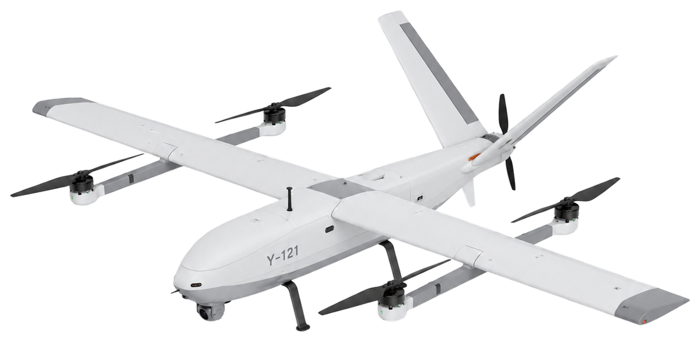
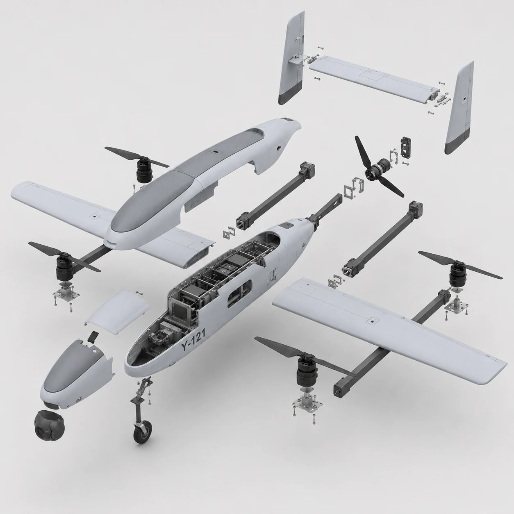

Embedded sensors and modules integrated
CAN, UART, SPI, I2C, STM32, ARM Cortex-MYOUSEF ISMAIL / AUTONOMOUS ENGINEERING
AUTONOMOUS
SYSTEMS
SOFTWARE ENGINEER
I architect and validate end-to-end autonomous systems-from embedded avionics and sensor integration to machine-learning inference, cloud data pipelines, and engineering reports.

UAV AVIONICSFlight-control integration / autonomous systems prototype
Bench, subsystem, and integration tests completed
UAV avionics validation and hardware-software debuggingYears of engineering experience
Autonomous systems, embedded avionics, AI, IoT, and industrial validationSelected autonomous systems projects
SKOLDERN, S/S1, agricAI, hazard detection UAV, and embedded R&DSKOLDERN / MIR-1
FROM PHYSICAL INSPECTION TO ACTIONABLE DATA.
SKOLDERN connects industrial inspection, edge sensing, predictive analytics, and automated reporting in one engineering workflow.
SENSE
EDGE
AI
REPORT
SKOLDERN MIR-1
The SKOLDERN MIR-1 is designed to transform physical inspection into high-quality data, enabling accurate analysis, safer operations, and faster decision-making in industrial environments.
Safe & Remote Operation
Reduces human exposure to hazardous and high-risk environments.
Real-Time Data Transmission
Streams data directly to the platform for instant analysis and insights.
Multi-Sensor System
Captures thermal, vibration, and visual data for comprehensive inspection.
Advanced Mobility
Designed for confined spaces, complex surfaces, and stable industrial inspection.
S/S1 / AUTONOMOUS INTELLIGENCE
S/S1 COUNTER-JAMMING UAV AI.
Developed an intelligent autonomy layer for the S/S1 UAV concept, focused on resilient navigation, degraded-link behavior, sensor-state validation, and decision support during interference scenarios.
GNSS-degraded navigation logicTelemetry recovery behaviorEmbedded flight-control validationAI-assisted mission decision flow

S/S1 UAVAutonomy intelligence / counter-jamming development
ENGINEERING DOMAINS
UAV AVIONICS
Flight-control integration, embedded sensing, communication, and validation across UAV prototypes.
ROBOTICS & AUTONOMY
Inspection workflows, autonomy concepts, and machine-state interfaces built for field engineering.
PREDICTIVE AI
Failure analysis, ML inference, automated reporting, and production-oriented validation pipelines.
EDGE-TO-CLOUD IoT
MQTT, OPC UA, Modbus, SQL, dashboards, and Azure architectures for industrial data flow.
PROFILE / ABOUT
Autonomous Systems Software Engineer focused on turning embedded hardware, sensor data, AI models, and industrial workflows into reliable systems that can sense, decide, and act in the real world.
My work connects UAV avionics, robotics concepts, predictive maintenance, remote sensing, and edge-to-cloud software into practical engineering products with clear validation and documentation.
Embedded AvionicsPredictive AIIndustrial IoT